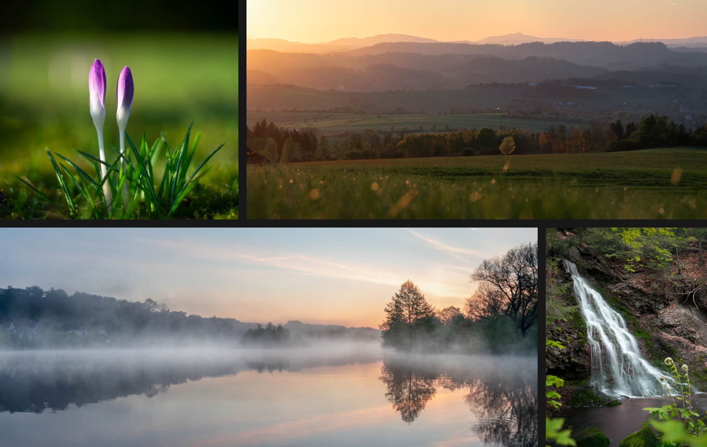

Fotografické kolekce

O projektu
V rámci předmětu Digitální fotografie jsem si vyzkoušela různé fotografické žánry, přístupy i techniky práce s obrazem. Vytvářela jsem kolekce zaměřené na produktovou fotografii, architekturu i přírodní motivy, přičemž každé prostředí vyžadovalo odlišnou práci se světlem, kompozicí a atmosférou. U produktových snímků jsem pracovala hlavně s kontrolovaným nasvícením a detailem materiálů, architektonické fotografie se soustředily na linie, perspektivu a rytmus prostoru. Při fotografování přírody jsem naopak reagovala na proměnlivé světelné podmínky a struktury krajiny. Projekt mi umožnil experimentovat s různými způsoby vizuálního vyprávění a citlivěji vnímat detail, prostor i barevnost obrazu.